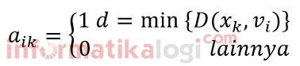
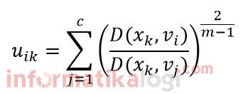
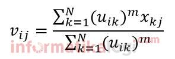
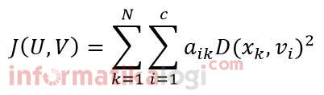
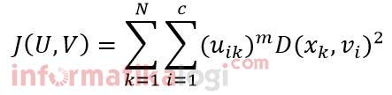

Algoritma K-Mean clustering
Algoritma K-Mean clustering
1. Distance Space atau Perhitungan Jarak Antara Data dan Centroid pada K-Means Clustering
Beberapa distance space dapat diimplementasikan untuk menghitung jarak (distance) antara data dan centroid termasuk di antaranya Manhattan/City Block Distance, Euclidean Distance dan Minkowski Distance. Tetapi secara umum distance space yang sering digunakan adalah Manhattan dan Euclidean. Euclidean sering digunakan karena penghitungan jarak dalam distance space ini merupakan jarak terpendek yang bisa didapatkan antara dua titik yang diperhitungkan, sedangkan Manhattan sering digunakan karena kemampuannya dalam mendeteksi keadaan khusus seperti keberadaaan outliers dengan lebih baik.
2.Hard K-Means dan Fuzzy K-Means
Secara mendasar, ada dua cara pengalokasian data kembali ke dalam masing-masing cluster pada saat proses iterasi clustering. Kedua cara tersebut adalah pengalokasian dengan cara tegas (hard), dimana data item secara tegas dinyatakan sebagai anggota cluster yang satu dan tidak menjadi anggota cluster lainnya, dan dengan cara fuzzy, dimana masing-masing data item diberikan nilai kemungkinan untuk bisa bergabung ke setiap cluster yang ada. Kedua cara pengalokasian tersebut diakomodasikan pada dua metode Hard K-Means dan Fuzzy K-Means.
Perbedaan di antara kedua metode ini terletak pada asumsi yang dipakai sebagai dasar pengalokasian
a. Hard K-Means
Pengalokasian kembali data ke dalam masing-masing cluster dalam metode Hard K-Means didasarkan pada perbandingan jarak antara data dengan centroid setiap cluster yang ada. Data dialokasikan ulang secara tegas ke cluster yang mempunyai centroid terdekat dengan data tersebut. Pengalokasian ini dapat dirumuskan sebagai berikut:

dimana: aik : Keanggotaan data ke-k ke cluster ke-i
vi : Nilai centroid cluster ke-i
b. Fuzzy K-Means
Metode Fuzzy K-Means (atau lebih sering disebut sebagai Fuzzy C-Means) mengalokasikan kembali data ke dalam masing-masing cluster dengan memanfaatkan teori Fuzzy. Teori ini mengeneralisasikan metode pengalokasian yang bersifat tegas (hard) seperti yang digunakan pada metode Hard K-Means. Dalam metode Fuzzy K-Means dipergunakan variabel membership function, uik, yang merujuk pada seberapa besar kemungkinan suatu data bisa menjadi anggota ke dalam suatu cluster.
Pada Fuzzy K-Means yang diusulkan oleh Bezdek, diperkenalkan juga suatu variabel myang merupakan weighting exponent dari membership function. Variabel ini dapat mengubah besaran pengaruh dari membership function, uik, dalam proses clustering menggunakan metode Fuzzy K-Means. Nilai m mempunyai wilayah nilai m>1.
Sampai sekarang ini tidak ada ketentuan yang jelas berapa besar nilai m yang optimal dalam melakukan proses optimasi suatu permasalahan clustering. Nilai myang umumnya digunakan adalah 2.
Membership function untuk suatu data ke suatu cluster tertentu dihitung menggunakan rumus sebagai berikut:

dimana: uik : Membership function data ke-k ke cluster ke-i
vi : Nilai centroid cluster ke-i
m : Weighting Exponent Membership function, uik, mempunyai wilayah nilai 0 ≤ uik ≤ 1. Data item yang mempunyai tingkat kemungkinan yang lebih tinggi ke suatu kelompok akan mempunyai nilai membership function ke kelompok tersebut yang mendekati angka 1 dan ke kelompok yang lain mendekati angka 0.
Untuk menghitung centroid cluster ke-i, vi, digunakan rumus sebagai berikut:

dimana: N : Jumlah data
m : Weighting exponent
uik : Membership function data ke-k ke cluster ke-i
3. Objective Function
Objective Function adalah pernyataan kuantitatif dari kasus optimasi, sebagai contoh: memaksimumkan benefit, dengan menentukan biaya operasi minimum. Objective Function yang digunakan untuk metode Hard K-Means, adalah sebagai berikut:

dimana: N : Jumlah data
c : Jumlah cluster
aik : Keanggotaan data ke-k ke cluster ke-i
vi : Nilai centroid cluster ke-i
Nilai aik mempunyai nilai 0 atau 1. Apabila suatu data merupakan anggota suatu kelompok maka nilai aik=1 dan sebaliknya.
Untuk metode Fuzzy K-Means, Objective Function yang digunakan adalah sebagai berikut:

dimana: N : Jumlah data c : Jumlah cluster m : Weighting exponent uik : Membership function data ke-k ke cluster ke-i vi : Nilai centroid cluster ke-i
Di sini uik bisa mengambil nilai mulai dari 0 sampai 1.